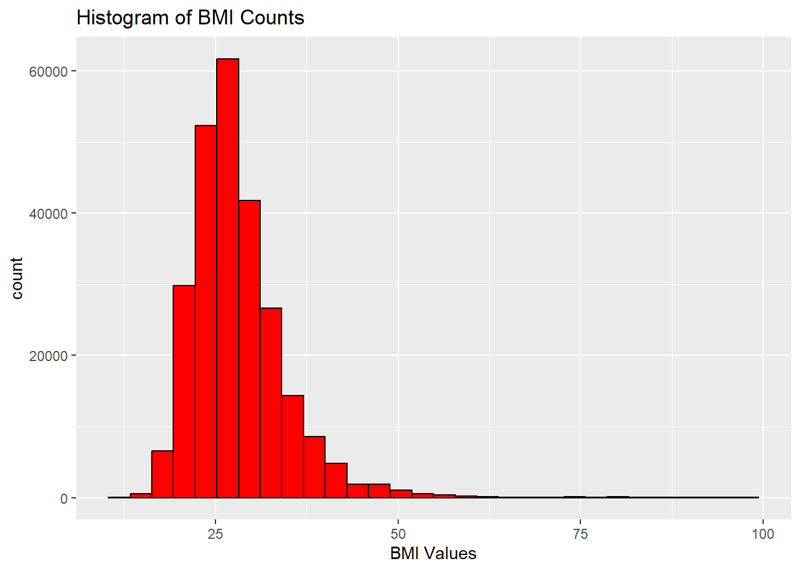
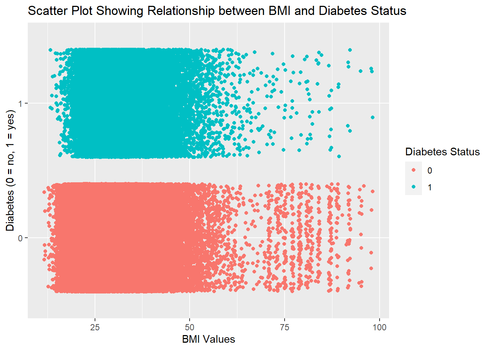

library(tidyverse)
library(ggplot2)
diabetes <- as_tibble(read_csv("diabetes_binary_health_indicators_BRFSS2015.csv")) |>
mutate(Diabetes_binary = as.factor(Diabetes_binary), HighBP = as.factor(HighBP),
HighChol = as.factor(HighChol), CholCheck = as.factor(CholCheck),
Smoker = as.factor(Smoker), Stroke = as.factor(Stroke),
HeartDiseaseorAttack = as.factor(HeartDiseaseorAttack),
PhysActivity = as.factor(PhysActivity), Fruits = as.factor(Fruits),
Veggies = as.factor(Veggies), HvyAlcoholConsump = as.factor(HvyAlcoholConsump),
AnyHealthcare = as.factor(AnyHealthcare), NoDocbcCost = as.factor(NoDocbcCost),
GenHlth = as.factor(GenHlth), MentHlth = as.factor(MentHlth),
PhysHlth = as.factor(PhysHlth), DiffWalk = as.factor(DiffWalk), Sex = as.factor(Sex),
Age = as.factor(Age), Education = as.factor(Education), Income = as.factor(Income))Exploring Diabetes Data Set
Introduction
Before we begin exploring our data, let’s give you some information about the data set and its variables, as well as the purpose of this document and how it will relate to our modeling.
Diabetes Health Indicators Data set
The data set we will be using throughout the entirety of our project will be the Diabetes Binary Health Indicators data set. This is a clean data set of 253,680 survey responses conducted by the CDC, in which the target variable is Diabetes_binary - where 0 denotes no diabetes, and 1 denotes pre-diabetes or diabetes. Also included in this data set, are 21 feature variables, that are not balanced, in which can hopefully be used to explain whether or not a person will have diabetes. The next section will dive deeper into the variables that we will use.
Important Variables
Below, is a list of the important variables I have identified that will be beneficial to explore in relation to our response variable of interest - Diabetes_binary (explained above):
HighBP: Do you have high blood pressure? 0 = no; 1 = yes (categorical)HighChol: Do you have high cholesterol? 0 = no; 1 = yes (categorical)BMI: Body Mass Index value (numeric)Smoker: Have you smoked at least 100 cigarette’s in their life? 0 = no; 1 = yes (categorical)Stroke: Have you ever been told you had a stroke? 0 = no; 1 = yes (categorical)HeartDiseaseorAttack: Have you ever had coronary heart disease (CHD) or myocardial infarction (MI)? 0 = no; 1 = yes (categorical)PhysActivity: Not including you job, ave you done any physical activity in past 30 days? 0 = no; 1 = yes (categorical)Fruits: Do you consume fruit 1 or more times a day? 0 = no; 1 = yes (categorical)Veggies: Do you consume vegetables 1 or more times a day? 0 = no; 1 = yes (categorical)HvyAlchoholConsump: Do you consume at least 14 (men) or at least 7 (women) drinks per week? 0 = no; 1 = yes (categorical)GenHlth: What would you say your general health is? 1 = excellent; 2 = very good; 3 = good; 4 = fair; 5 = poor (categorical/ordinal)Sex: What is your sex? 0 = female; 1 = male (categorical)Age: How old are you? 13-level age category
Purpose
The purpose of this document is to explore the variables listed above, specifically in relation to our response variable of interest Diabetes_binary. We will look at numerical/categorical summaries, as well as visualizations to see if we can highlight any important relationships or patterns in the data. This will translate to our modeling page, where we will take what we have learned from our data exploration and apply it to our model building. Here, we will identify potential influential variables and use them in our models to determine there true effect in classfying whether or not an individual has diabetes. Now, it is time to start exploring our data
Read/Manipulate Data Set
Here, we will be reading in the raw csv file, and performing some data cleaning/manipulation tactics to prepare it for data exploration. This is also where we will load in some useful R packages that will be essential for the completion of this document.
Exploratory Data Analysis
In this section, we will be doing our data exploration on our important variables to look at their relationship with our response variable of interest. To start, there is only one numeric variable in this data set, BMI (Body Mass Index), so we will explore that first.
Numeric Variable Exploration
diabetesBMI <- diabetes |>
select(Diabetes_binary, BMI)
summary(diabetesBMI$BMI) Min. 1st Qu. Median Mean 3rd Qu. Max.
12.00 24.00 27.00 28.38 31.00 98.00 Looking at a quick summary of the BMI variable, we can begin to see that most values will be clustered within 12-31 (75% of values); however, there will be 25% of the values that will be spread out across a range of 31 to 98. Let’s dive a bit deeper into this variable:
bmiPlot <- ggplot(diabetesBMI)
bmiPlot + geom_histogram(aes(x = BMI), color = "Black", fill = "Red") +
labs(title = "Histogram of BMI Counts", x = "BMI Values") `stat_bin()` using `bins = 30`. Pick better value with `binwidth`.
The histogram above, reaffirms the previous finding, and we can see we have right-skewed distribution. Let us explore it’s relationship with the response variable:
bmiPlot +
geom_jitter(aes(x = BMI, y = Diabetes_binary, color = factor(Diabetes_binary))) +
labs(x = "BMI Values", y = "Diabetes (0 = no, 1 = yes)",
title = "Scatter Plot Showing Relationship between BMI and Diabetes Status",
color = "Diabetes Status")
Based off of this scatter plot, there is really no glaring patterns here that I can see. Let us move to the categorical predictors to see if there is any glaring relationships.
Categorical Variable Exploration
In this section, we are going to look at all of the categorical variables from our list of important variables. This will give us a better look to see which variables could be the most important in relation to the response. For a recap of variable descriptions, see the Important Variables section.
diabetesCat <- diabetes |>
select(-BMI)
results <- list()
for (i in names(diabetesCat)[-1]) {
var <- i
contTable <- table(diabetesCat$Diabetes_binary, diabetesCat[[i]])
contDf <- as.data.frame(contTable)
colnames(contDf) <- c("Diabetes", var, "Count")
percentages <- contDf |>
group_by(!!sym(var)) |>
mutate(Percentage = Count / sum(Count) * 100)
results[[i]] <- percentages
}
for (i in names(results)) {
print(results[[i]])
}# A tibble: 4 × 4
# Groups: HighBP [2]
Diabetes HighBP Count Percentage
<fct> <fct> <int> <dbl>
1 0 0 136109 94.0
2 1 0 8742 6.04
3 0 1 82225 75.6
4 1 1 26604 24.4
# A tibble: 4 × 4
# Groups: HighChol [2]
Diabetes HighChol Count Percentage
<fct> <fct> <int> <dbl>
1 0 0 134429 92.0
2 1 0 11660 7.98
3 0 1 83905 78.0
4 1 1 23686 22.0
# A tibble: 4 × 4
# Groups: CholCheck [2]
Diabetes CholCheck Count Percentage
<fct> <fct> <int> <dbl>
1 0 0 9229 97.5
2 1 0 241 2.54
3 0 1 209105 85.6
4 1 1 35105 14.4
# A tibble: 4 × 4
# Groups: Smoker [2]
Diabetes Smoker Count Percentage
<fct> <fct> <int> <dbl>
1 0 0 124228 87.9
2 1 0 17029 12.1
3 0 1 94106 83.7
4 1 1 18317 16.3
# A tibble: 4 × 4
# Groups: Stroke [2]
Diabetes Stroke Count Percentage
<fct> <fct> <int> <dbl>
1 0 0 211310 86.8
2 1 0 32078 13.2
3 0 1 7024 68.2
4 1 1 3268 31.8
# A tibble: 4 × 4
# Groups: HeartDiseaseorAttack [2]
Diabetes HeartDiseaseorAttack Count Percentage
<fct> <fct> <int> <dbl>
1 0 0 202319 88.0
2 1 0 27468 12.0
3 0 1 16015 67.0
4 1 1 7878 33.0
# A tibble: 4 × 4
# Groups: PhysActivity [2]
Diabetes PhysActivity Count Percentage
<fct> <fct> <int> <dbl>
1 0 0 48701 78.9
2 1 0 13059 21.1
3 0 1 169633 88.4
4 1 1 22287 11.6
# A tibble: 4 × 4
# Groups: Fruits [2]
Diabetes Fruits Count Percentage
<fct> <fct> <int> <dbl>
1 0 0 78129 84.2
2 1 0 14653 15.8
3 0 1 140205 87.1
4 1 1 20693 12.9
# A tibble: 4 × 4
# Groups: Veggies [2]
Diabetes Veggies Count Percentage
<fct> <fct> <int> <dbl>
1 0 0 39229 82.0
2 1 0 8610 18.0
3 0 1 179105 87.0
4 1 1 26736 13.0
# A tibble: 4 × 4
# Groups: HvyAlcoholConsump [2]
Diabetes HvyAlcoholConsump Count Percentage
<fct> <fct> <int> <dbl>
1 0 0 204910 85.6
2 1 0 34514 14.4
3 0 1 13424 94.2
4 1 1 832 5.84
# A tibble: 4 × 4
# Groups: AnyHealthcare [2]
Diabetes AnyHealthcare Count Percentage
<fct> <fct> <int> <dbl>
1 0 0 10995 88.5
2 1 0 1422 11.5
3 0 1 207339 85.9
4 1 1 33924 14.1
# A tibble: 4 × 4
# Groups: NoDocbcCost [2]
Diabetes NoDocbcCost Count Percentage
<fct> <fct> <int> <dbl>
1 0 0 200722 86.4
2 1 0 31604 13.6
3 0 1 17612 82.5
4 1 1 3742 17.5
# A tibble: 10 × 4
# Groups: GenHlth [5]
Diabetes GenHlth Count Percentage
<fct> <fct> <int> <dbl>
1 0 1 44159 97.5
2 1 1 1140 2.52
3 0 2 82703 92.8
4 1 2 6381 7.16
5 0 3 62189 82.2
6 1 3 13457 17.8
7 0 4 21780 69.0
8 1 4 9790 31.0
9 0 5 7503 62.1
10 1 5 4578 37.9
# A tibble: 62 × 4
# Groups: MentHlth [31]
Diabetes MentHlth Count Percentage
<fct> <fct> <int> <dbl>
1 0 0 152277 86.7
2 1 0 23403 13.3
3 0 1 7726 90.5
4 1 1 812 9.51
5 0 2 11546 88.4
6 1 2 1508 11.6
7 0 3 6457 87.5
8 1 3 924 12.5
9 0 4 3300 87.1
10 1 4 489 12.9
# ℹ 52 more rows
# A tibble: 62 × 4
# Groups: PhysHlth [31]
Diabetes PhysHlth Count Percentage
<fct> <fct> <int> <dbl>
1 0 0 143312 89.5
2 1 0 16740 10.5
3 0 1 10200 89.6
4 1 1 1188 10.4
5 0 2 12736 86.3
6 1 2 2028 13.7
7 0 3 7206 84.8
8 1 3 1289 15.2
9 0 4 3779 83.2
10 1 4 763 16.8
# ℹ 52 more rows
# A tibble: 4 × 4
# Groups: DiffWalk [2]
Diabetes DiffWalk Count Percentage
<fct> <fct> <int> <dbl>
1 0 0 188780 89.5
2 1 0 22225 10.5
3 0 1 29554 69.3
4 1 1 13121 30.7
# A tibble: 4 × 4
# Groups: Sex [2]
Diabetes Sex Count Percentage
<fct> <fct> <int> <dbl>
1 0 0 123563 87.0
2 1 0 18411 13.0
3 0 1 94771 84.8
4 1 1 16935 15.2
# A tibble: 26 × 4
# Groups: Age [13]
Diabetes Age Count Percentage
<fct> <fct> <int> <dbl>
1 0 1 5622 98.6
2 1 1 78 1.37
3 0 2 7458 98.2
4 1 2 140 1.84
5 0 3 10809 97.2
6 1 3 314 2.82
7 0 4 13197 95.5
8 1 4 626 4.53
9 0 5 15106 93.5
10 1 5 1051 6.50
# ℹ 16 more rows
# A tibble: 12 × 4
# Groups: Education [6]
Diabetes Education Count Percentage
<fct> <fct> <int> <dbl>
1 0 1 127 73.0
2 1 1 47 27.0
3 0 2 2860 70.7
4 1 2 1183 29.3
5 0 3 7182 75.8
6 1 3 2296 24.2
7 0 4 51684 82.4
8 1 4 11066 17.6
9 0 5 59556 85.2
10 1 5 10354 14.8
11 0 6 96925 90.3
12 1 6 10400 9.69
# A tibble: 16 × 4
# Groups: Income [8]
Diabetes Income Count Percentage
<fct> <fct> <int> <dbl>
1 0 1 7428 75.7
2 1 1 2383 24.3
3 0 2 8697 73.8
4 1 2 3086 26.2
5 0 3 12426 77.7
6 1 3 3568 22.3
7 0 4 16081 79.9
8 1 4 4054 20.1
9 0 5 21379 82.6
10 1 5 4504 17.4
11 0 6 31179 85.5
12 1 6 5291 14.5
13 0 7 37954 87.8
14 1 7 5265 12.2
15 0 8 83190 92.0
16 1 8 7195 7.96